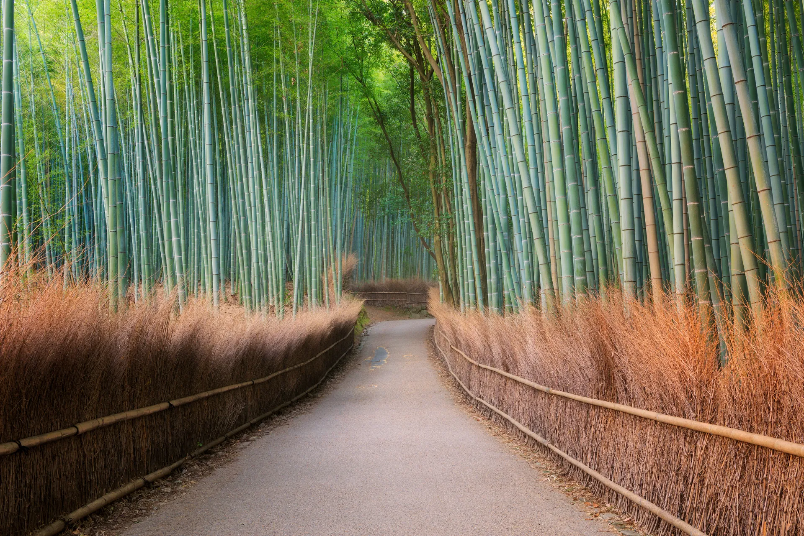

Leh Ladakh , India
Leh Ladakh Tourism
Ladakh is a union territory in the Kashmir region of India. Formerly falling in the state of Jammu &
Kashmir, Ladakh was administered a union territory on 31st October 2019. Extending from the Siachen
Glacier to the main Great Himalayas, Ladakh is a land like no other. Dominated by dramatic
landscapes, Ladakh is known as the world's coldest desert.
Ladakh is divided into two districts: district Leh and district Kargil. The former district has a
famous town, "Leh", and is a great tourist attraction because of its beautiful monasteries nearby,
Shanti Stupa, cafes and Leh Bazaar defining the place's culture.
Ladakh is an adventure playground for rafting and high-altitude trekking. Note that Leh Ladakh is
inaccessible by road outside the summer months. The route passes close altogether from around
October to May, and the only way to reach is by air. Chadar trek on frozen Zanskar river takes place
in January to the end of February.
Tanzania , Africa
Tanzania Tourism
Tanzania is the largest country in East Africa and includes the islands of Zanzibar, Pemba, and
Mafia.
There are about 120 African tribal groups in Tanzania. Arranged marriage is still customary for many
Tanzanian families and parents start planning for their daughter’s future when she is young.
Most of the land was once savanna and bush, but today is semidesert. There is an abundance of
wildlife in Tanzania. The largest remaining elephant populations in the world are in Tanzania’s
Selous Game Reserve, but they are still being killed for their ivory
Some of the most well-known African mammal species are native to Tanzania: wildebeest, zebra,
giraffe, elephant, rhino, lion, and leopard. They are endangered due to poaching. Crocodiles and
hippopotamuses can be found along riverbanks and lakeshores, and giant turtles live off the coast.
Cappadocia, Turkey

Cappadocia Tourism
Cappadocia, an area in Turkey where entire cities have been carved into rock, is pretty incredible on its own. But whenever hot air balloons pepper the sky—with many floating up right at sunrise—its beauty level literally skyrockets.
the moonscaped region of Cappadocia, southeast of Ankara, is most famous for unique geological features called fairy chimneys. The large, cone-like formations were created over time by erosion of the relatively soft volcanic ash around them. Past cultures have dug into them to create dwellings, castles (like Uchisar) and even entire underground cities like Kaymakli and Derinkuyu, used as hiding places by early Christians. Nearby Kayseri is the gateway to the area.
Banff National Park, Canada

Banff National Park Tourism
Rocky Mountain peaks, glacial lakes, and adventure come together in Banff National Park - Canada’s first national park and the flagship of the nation’s park system. Banff is part of the Canadian Rocky Mountain Parks UNESCO World Heritage Site.
Here, you'll see pine forests, glaciers, snow-capped mountains, alpine lakes, and wildlife like grizzly bears, moose, and elks. If you love adventure, summer is ideal for stunning hikes up Banff's peaks, and winter is great for skiing against the backdrop of the Canadian Rockies. There are plenty of accommodation options for all kinds of travelers as well, from outdoor campgrounds to luxury hotels.
Arashiyama Bamboo Grove, Japan
Arashiyama Bamboo Grove Tourism
The Sagano Bamboo Forest is situated northwest of Kyoto in Japan near the Tenryū-ji temple. It covers an area of 16 km2 (6.2 sq mi), in one of the temperate regions of the world.
The Arashiyama Bamboo Grove is one of Kyoto's most iconic sights, and a walk through it will be one of your most lasting impressions of this city.